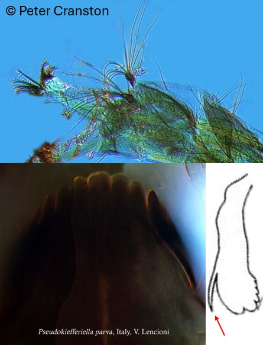
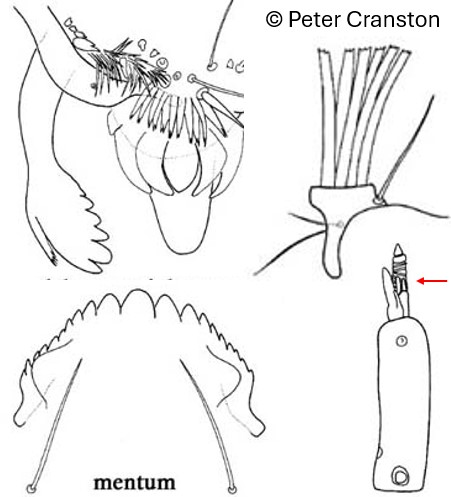
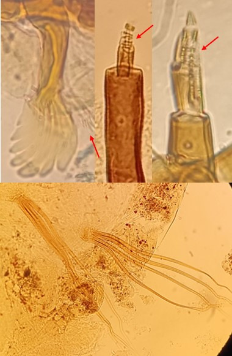

Sous famille des Diamesinae
Mentum avec de nombreuses dents. Dent médiane peu séparée de la première paire de dents latérales, prémandibules avec de nombreuses dents



Prémandibules avec une épine latérale non ramifiée. Soies sombres sur le corps et procercus bien développé portant 7-8 soies anales
Mentum avec 4-5 dents médianes forment un groupe distinct vers l’avant (écart marqué avec la 1ère paire des dents latérales dessinant presque un « dorsomentum »)
3ème segment antennaire plus long que le 2ème, procercus avec 5-6 soies anales et 2 soies subapicales
Prémandibules avec une épine latérale ramifiée
3ème segment antennaire plus court que le 2ème, procercus absent ou peu développé portant 4 (ou plus rarement 5) soies anales
Prémandibules avec une épine latérale ramifiée